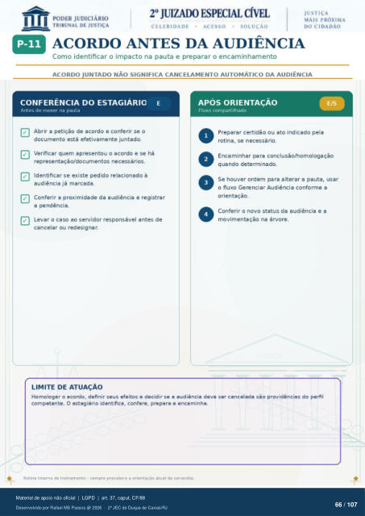

Transcrição automática em português, ainda não revisada. Confira grafia, prazos e termos jurídicos na imagem e no PDF antes de utilizar.
ACORDO ANTES DA AUDIÊNCIA
Como identificar o impacto na pauta e preparar o encaminhamento
ACORDO JUNTADO NÃO SIGNIFICA CANCELAMENTO AUTOMÁTICO DA AUDIÊNCIA
CONFERÊNCIA DO ESTAGIÁRIO
Antes de mexer na pauta Abrir a petição de acordo e conferir se o
documento está efetivamente juntado. Verificar quem apresentou o acordo e se há
representaçáo/documentos necessários. Identificar se existe pedido relacionado à
audiência já marcada. Conferir a proximidade da audiência e registrar
a pendência. Levar o caso ao servidor responsável antes de
cancelar ou redesignar.
LIMITE DE ATUAÇÃO
APÓS ORIENTAÇÃO
Fluxo compartilhado Preparar certidão ou ato indicado pela
rotina, se necessário. Encaminhar para conclusão/homologaçáo
quando determinado. Se houver ordem para alterar a pauta, usar
o fluxo Gerenciar Audiência conforme a orientação.
Conferir o novo status da audiência e a movimentação na árvore.
Homologar 0 acordo, definir seus efeitos e decidir se a audiência deve ser cancelada providências do perfil competente. O estagiário identifica, confere, prepara e encaminha.
Rotina interna de treinamento - sempre prevalece a orientaçáo atual da serventia.
Ver também o infográfico original (página 66)
